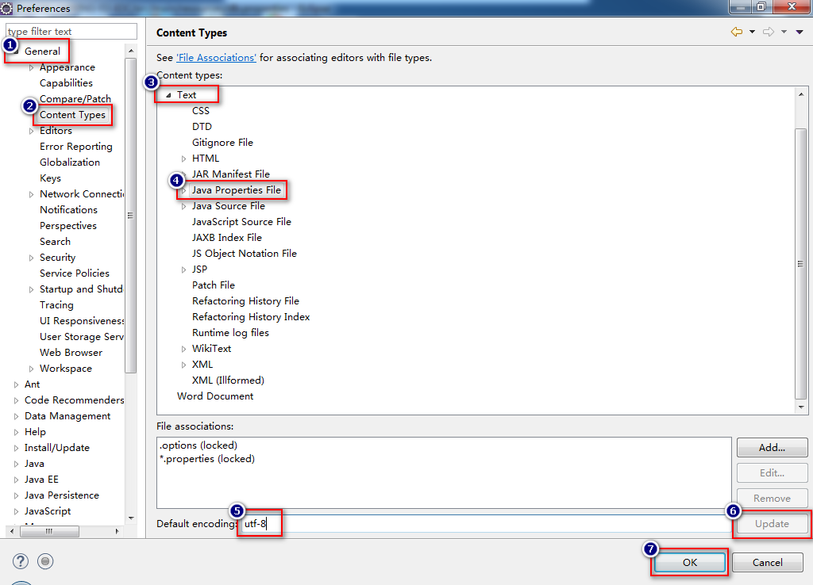

1. Spring IoC
IoC：Inversion of control：控制反转：在传统开发模式下，对象的创建过程和管理过程都是由开发者通过Java程序来实现的，操作权在开发者的Java程序中，当使用了Spring框架后，对象的创建与管理都不再由开发者编写的程序来决定！而是交给框架来决定，具体的做法可以是通过配置框架的XML文件来实现，或其它方式。
DI：Dependency Injection：依赖注入：为类的属性注入值。
IoC是Spring框架所实现的目标，而DI是实现该目标所使用的手段，即：Spring通过DI实现了IoC。
2. 通过SET方式为属性注入值
可能通过配置Spring的配置文件，使得类中的属性是注入过值的，最终，当从Spring容器中获取对象时，其中的属性就已经有值了！
要为属性注入值，首先，需要为属性添加SET方法：
public class User {
Integer age;
public void setAge(Integer age) {
this.age = age;
}
}
然后，在Spring的配置的XML中：
<bean id="xx" class="xx.xx.xx">
<property name="age" value="23" />
</bean>
以上配置中，<property>节点用于配置属性的值，name可以理解为属性名称，value就是需要注入的值，仅适用于属性的值是基本值（可以直接书写的值，例如数值、布尔值、字符或字符串）的情况，如果属性的值是对象型的，需要在Spring的配置文件中先配置对象所归属的类的<bean>，然后，注入值时，使用ref属性引用到那个<bean>的id值：
<bean id="now"
class="java.util.Date" />
<bean id="user"
class="cn.tedu.spring.User">
<property name="regTime" ref="now" />
</bean>
注意：在<property>节点中，name属性的值，其实是类中的属性对应的SET方法名称中set右侧的名称且首字母小写，例如SET方法名是setAge，则此处<property name="???">的值应该是age，如果SET方法名是setFrom，则<property name="???">的值应该是from！但是，通常可以不必关心这个问题，因为SET方法应该是通过Eclipse这种开发工具自动生成的，SET方法的名称是规范的，与Spring框架使用的规则是相同的，所以，只要能保证SET方法的名称是规范的，不必纠结<property>中的name属性到底指的是什么。
3. 【不常用】 通过构造方法注入属性的值
假设存在：
public class Person {
public String from;
public Person(String from) {
this.from = from;
}
}
即：需要注入值的属性并没有SET方法，而是存在构造方法为该属性赋值，在这种情况下的配置应该是：
<!-- 通过构造方法注入属性的值 -->
<!-- constructor-arg节点用于配置构造方法的参数 -->
<bean id="person"
class="cn.tedu.spring.Person">
<constructor-arg
index="0" value="Shenzhen" />
</bean>
在以上配置中，<constructor-arg>节点用于配置构造方法的参数，节点中的index属性表示参数的序号，是从0开始顺序编号的，即第1个参数的index值应该是0，如果有更多的参数，第2个参数的index值应该是1，以此类推，需要注入的值根据类型选取value或ref即可。
4. 注入集合类型的值
常见的集合类型的数据有：List、Set、Map和数组，在注入这些类型的属性值时，还是应该先选取使用SET方式注入，或使用构造方法注入，通常，优先选择通过SET方式注入：
public class SampleBean {
// 期望值：Tom, Kate, Mary, David
private List<String> names;
// 期望值：Beijing, Shanghai, Guangzhou, Shenzhen
private Set<String> cities;
// 期望值：uid=9527, username=Jack, password=1234
private Map<String, String> session;
// 期望值：3个数字
private Integer[] numbers;
public List<String> getNames() {
return names;
}
public void setNames(List<String> names) {
this.names = names;
}
public Set<String> getCities() {
return cities;
}
public void setCities(Set<String> cities) {
this.cities = cities;
}
public Map<String, String> getSession() {
return session;
}
public void setSession(Map<String, String> session) {
this.session = session;
}
public Integer[] getNumbers() {
return numbers;
}
public void setNumbers(Integer[] numbers) {
this.numbers = numbers;
}
}
在编写XML配置时，由于使用的是SET方式注入，所以，还是在<bean>节点之下添加<property>进行注入，根据属性类型的不同，选择不同的子级节点，例如<list>、<set>、<map>、<array>：
<!-- 注入集合类型的值 -->
<bean id="sampleBean"
class="cn.tedu.spring.SampleBean">
<!-- 注入List类型的值 -->
<property name="names">
<list>
<value>Tom</value>
<value>Kate</value>
<value>Mary</value>
<value>David</value>
</list>
</property>
<!-- 注入Set类型的值 -->
<property name="cities">
<set>
<value>Hangzhou</value>
<value>Beijing</value>
<value>Shanghai</value>
<value>Guangzhou</value>
<value>Shenzhen</value>
</set>
</property>
<!-- 注入Map类型的值 -->
<property name="session">
<map>
<entry key="uid" value="9527" />
<entry key="username" value="Jack" />
<entry key="password" value="1234" />
</map>
</property>
<!-- 注入数组类型的值 -->
<property name="numbers">
<list>
<value>7</value>
<value>3</value>
<value>9</value>
</list>
</property>
</bean>
在实际应用中，还经常需要使用到.properties类型的配置文件，在Spring中，只需要通过<util:properties>节点就可以轻松读取这类型的配置文件：
<!-- 读取.properties文件 -->
<!-- classpath表示src/main/resources文件夹 -->
<util:properties id="dbConfig"
location="classpath:db.properties" />
需要注意的是<util:properties>本质上还是<bean>，所以，可以被其它的注入操作来引用：
<!-- 注入来自.properties中的配置 -->
<property name="properties" ref="dbConfig" />
在某些场景中，如果一定需要自行配置Properties类型的值，其结构为：
<property name="xx">
<props>
<prop key="username">root</prop>
<prop key="password">1234</prop>
</props>
</property>
以上所有关于集合类型的值的注入操作中，Properties类型的相关操作属于略常用操作，其它类型的注入操作相对更少。
Spring表达式
通过Spring表达式，可以在配置中访问到某个Bean的某个属性的值！
Spring表达式的基本格式是#{表达式}，假设ValueBean中有username属性，其值是User中的name属性值，则配置为：
<bean id="valueBean"
class="cn.tedu.spring.ValueBean">
<property name="username"
value="#{user.name}" />
</bean>
以上Spring表达式#{user.name}中，user是bean id，name是属性名。
假设ValueBean中有realname属性，其值是SampleBean中的names（List类型的集合）中的第2个值，则配置为：
<property name="realname"
value="#{sampleBean.names[1]}" />
假设ValueBean中有password属性，其值是SampleBean中的session（Map类型的集合）中Key为password的值，则配置为：
<property name="password"
value="#{sampleBean.session.password}" />
以上访问Map集合中的数据的表达式还可以写为#{sampleBean.session['password']}，但是，使用相对比较麻烦，并不推荐这样使用！
总的来说，使用Spring表达式可以访问其它Bean中的属性值：
- 某属性的值：
#{bean-id.属性名称} - 访问List集合中的值：
#{bean-id.集合名称[下标或索引]} - 访问Map集合中的值：
#{bean-id.集合名称.key}或#{bean-id.集合名称['key']}
【附】 Resource Leak / 内存溢出 / 内存泄露
连接型资源在使用完之后，应该调用类似于close()的方法，以释放资源，否则，将可能导致内存溢出。
内存溢出指的是：某个资源已经无法再使用，但是，连接可能依然存在，对于开发者而言，无法再调用其任何属性或方法，所以，是一个垃圾数据，但对于JVM而言，由于连接是存在的，被视为“仍处于使用状态”，不会认为它是一个垃圾数据，则不会回收！这样的数据的表现就是“对于程序员来说无法再使用，对于JVM而言却不会去回收”，所以，这样的数据会长期占用内存，如果这样数据越来越多，将导致可用内存越来越少，达到极限状态时就会出现溢出！
所以，少量的内存溢出并没有明显的危害，但是，每一个开发者都应该尽量的解决所有可能的内存溢出问题！核心宗旨就是“用完了及时关闭，无法随时关闭的，善用try..catch..finally”。
【附】 在.properties文件中使用中文
